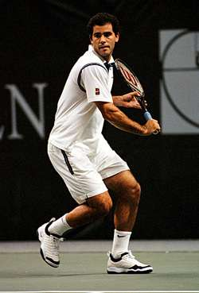
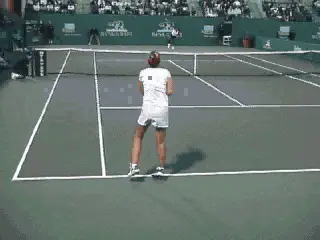
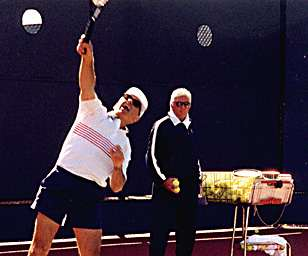

Creating American Champions Process¶
Creating American Champions¶
The Developmental Process¶
Robert Lansdorp¶
Building champions is long, complex process. You can't develop a kid in one month. It's impossible. That's why it's called development. Here are some of the factors that go into it:
Traditional Lessons¶
First there's the role of traditional lessons. Some people have the feeling that the more lessons the better. Some parents like to brag: "My kid takes lessons everyday." That's a crazy idea. If the pro feeds balls to the kid everyday and does nothing but try to correct his strokes, it makes the student stale. The student never learns to do it for himself, since it's all being done for him on the teaching court. In the beginning it's very important for players to think for themselves.
They should have a lesson for an hour once a week, maybe twice a week. Pete Sampras, Lindsay Davenport, Tracy Austin, Jeff Tarango - you can name every single player I worked with. They had no more than an hour, sometimes 2 hours a week. The only exception is if someone comes in from out of town, you might see them every day for 10 days and then you don't see them for a month.

\ Every player I worked with had no more than an hour, sometimes two a week.There's a difference between this kind of developmental lesson and rallying or working on something. You can work on something with the pro the day after the lesson. But it doesn't have to be done by the same teacher - it can be an assistant or a hitting partner. The key is for the player to develop their own instincts for the game. For example, players should work on their serve everyday outside the lessons, including hitting serves by themselves.
Discipline¶
A second factor is discipline. We live in a society where everything is going fast all the time. Kids have computers, they have video games. Kids don't read anymore.
Everything switches really quickly, and kids don't learn to concentrate on one thing. I put a lot of effort into developing discipline and concentration because I know how important it is.
I have a reputation for being a rough guy with no feeling for kids, but that's far from true. I work extremely hard to make every kid a better player. I show kids respect. The kids can feel this and in return, maybe, they try harder than they even thought they could. My compliments may be hard to come by, but they are there. I believe that if the kid can hit one great backhand, he can hit ten, and if he can hit ten, he can hit a hundred. I tell the kid, imagine what you can do in a few years if you work hard with great concentration and discipline!
Strokes¶
A third element is the process of actually developing or changing the stroke: In the lessons, I give students the way they have to hit the ball. If you get the player to hit the ball the way you want right away, he'll do it that way for the rest of his life. I tell them when you come back, the first ball you hit better be right, just the way I showed you. I tell them I know you can do it!
I say listen kid, you're going to hit 20 forehands exactly right. I'm not fooling around. I'm not here to baby-sit you. We aren't going to do it right once, we're going to do it 20 times. And the kid will do 20. The parents are sitting right there and they can't believe it. They cannot believe that all of a sudden, the kid's stroke is the way it's supposed to be. That's how I create concentration.
This development process is what I love - the one-on-one interaction with the kid. The kid hits me one ball, I know exactly what's going on. I'm pretty sure I know exactly what the kid's about too. You see a kid two months later; you see a little improvement. A year later, you see more improvement.

\ Too many coaches and parents are seduced by the idea of having a champion. Very few grow up to be a Sampras or a DavenportI used to do a big camp. I felt guilty because there were 100 kids and I knew I would send them home and I wouldn't be a huge impact on them. I didn't like that. I didn't enjoy it. I was embarrassed almost - acting like, just because I'm here, the kids were going to become great players.
There's only one way I could do a live in academy, and that would be if I really had responsibility for every kid that comes there.
¶
¶
¶
Expectations¶
A fourth factor is dealing with expectations: It's important to get across to the parent that when your kid's 12 years old, don't be too sure your kids going to be number one in the world. Too many coaches and parents are seduced by the idea of having a champion. As soon as kid is pretty good, they think: "this is going to be my meal ticket." They use this kid. A coach says, "I have this kid at my academy and he's number one in the 14's." And the parents say "My god, he's got the number one player - let's all go there!" It happens all the time. And they don't make the kid any better. The kid doesn't really improve. He just gets used.
I've had very good kids. But I've also had kids that were not going to be great. Sometimes I have kids that have almost given up on the game. Then they come with me and I actually turn some of them around. All of a sudden, they become enthusiastic and they have confidence. They have the confidence that I am willing to spend time with them. How is that possible? "I thought he only worked with champions." And I take anybody basically. It doesn't make any difference. When a parent approaches me, my first reaction is usually "Ok I'll help your kid."

\ Adults enjoy me, because I treat them like juniors. I can make them better.
Robert Lansdorp is the legendary Southern California coach who has developed dozens of world class junior and professional players. Robert's players include 4 champions who have gone on to become number one in the world: Maria Sharapova, Pete Sampras, Lindsay Davenport, and Tracy Austin. In these articles, found exclusively on Tennisplayer, Robert share his views on what goes into the making of a champion, and how he developed the strokes of some of the best ball strikers in the history of tennis.